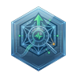

Select a dashboard from the sidebar

Chart-Monitor requires a Git repository to load monitoring scripts. Follow the guide below to configure your SSH key and set the required environment variables.
Docsssh-keygen -t ed25519 -C "chart-monitor-deploy" -f ~/.ssh/id_rsa_chart_monitor -N ""
cat ~/.ssh/id_rsa_chart_monitor.pubGIT_SSH_URL=git@github.com:your-org/your-repo.git GIT_SSH_KEY_PATH=/path/to/id_rsa_chart_monitor GIT_TARGET_PATH=/app/store SYNC_SECRET=your-strong-secret
ssh-keygen -t ed25519 -C "chart-monitor-deploy" -f ~/.ssh/id_rsa_chart_monitor -N ""
cat ~/.ssh/id_rsa_chart_monitor.pubGIT_SSH_URL=git@gitlab.com:your-group/your-repo.git GIT_SSH_KEY_PATH=/path/to/id_rsa_chart_monitor GIT_TARGET_PATH=/app/store SYNC_SECRET=your-strong-secret
ssh-keygen -t ed25519 -C "chart-monitor-deploy" -f ~/.ssh/id_rsa_chart_monitor -N ""
cat ~/.ssh/id_rsa_chart_monitor.pubGIT_SSH_URL=git@bitbucket.org:your-workspace/your-repo.git GIT_SSH_KEY_PATH=/path/to/id_rsa_chart_monitor GIT_TARGET_PATH=/app/store SYNC_SECRET=your-strong-secret
Enter the SYNC_SECRET to authenticate the sync request.